Description: Observe the introduction of high yielding crop varieties as the starting point of the Green Revolution.
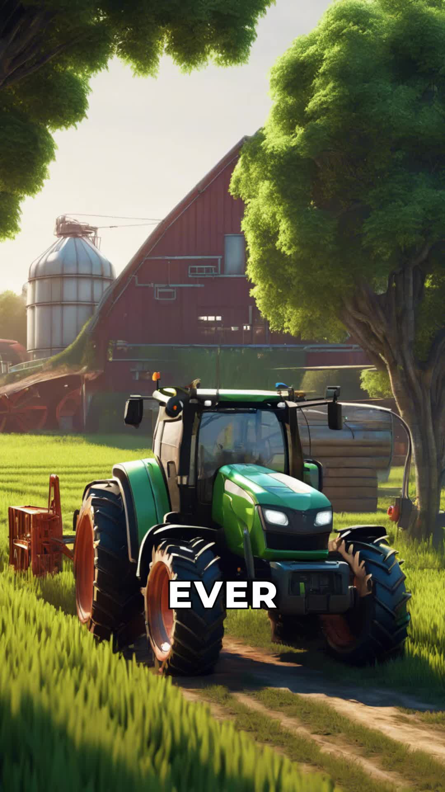
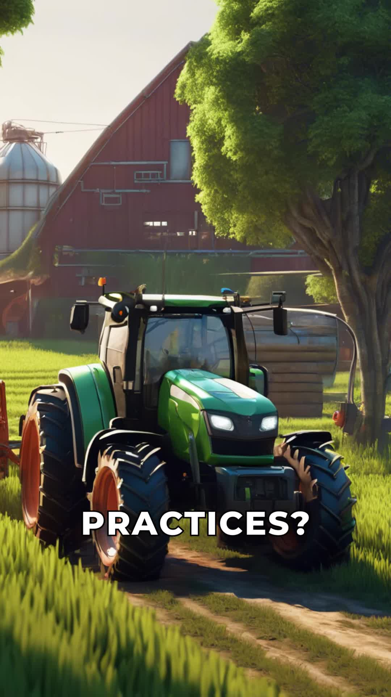
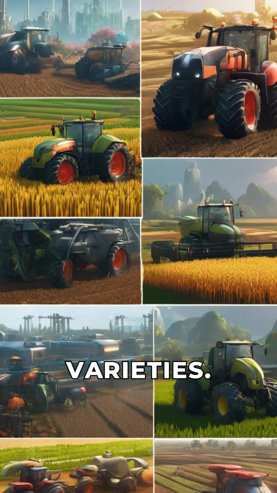
Description: Note that these crops produced significantly higher yields than traditional ones.
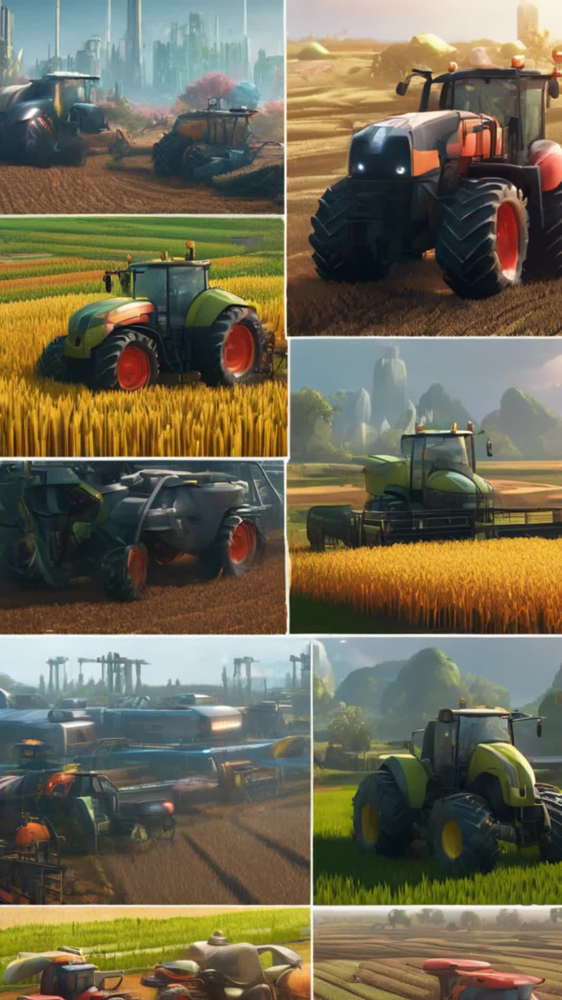
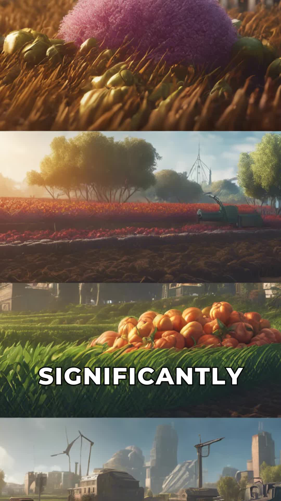
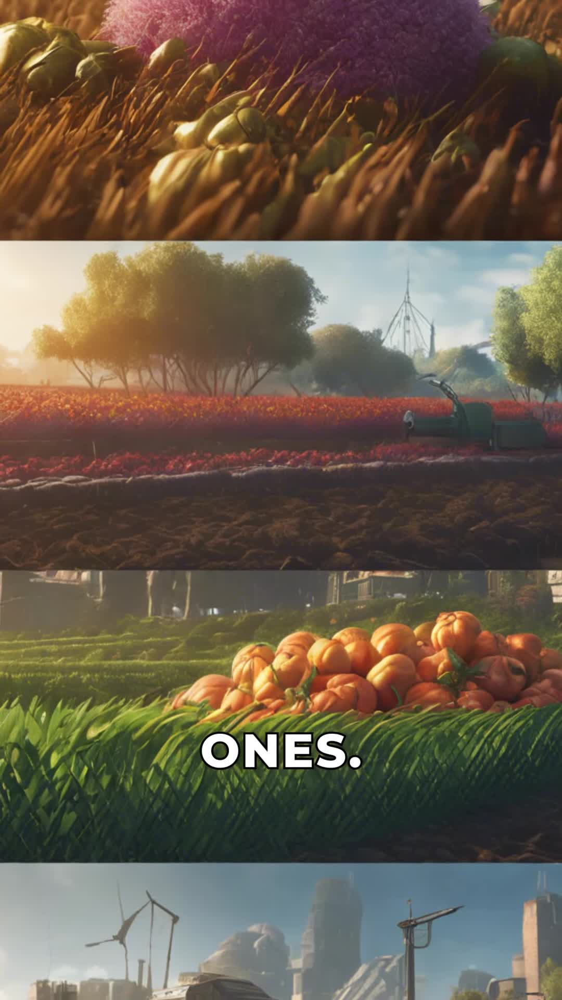
Description: Notice the use of chemical fertilizers and pesticides to boost crop growth.
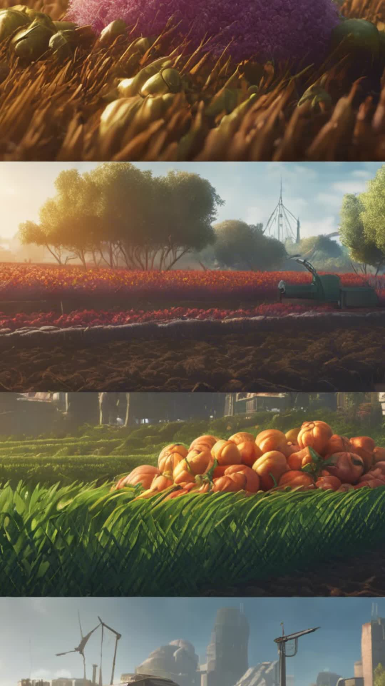
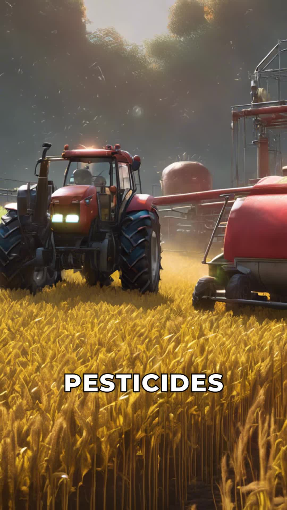
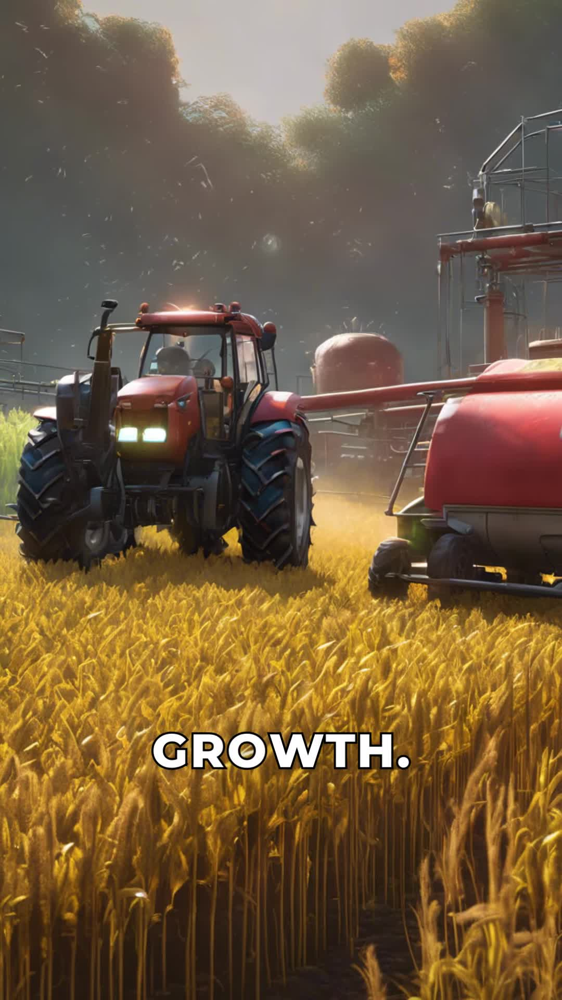
Description: Observe that this combination revolutionized agriculture, increasing food production globally.
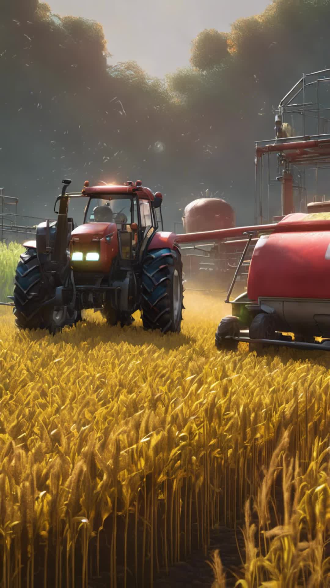
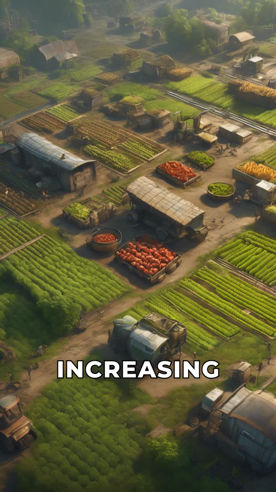
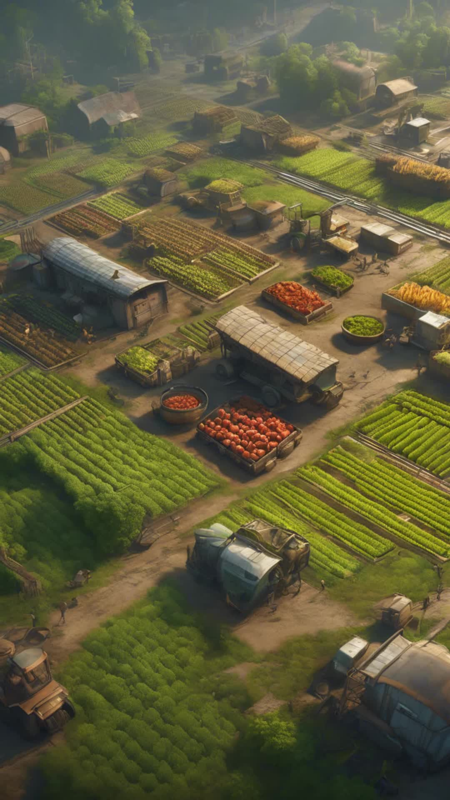